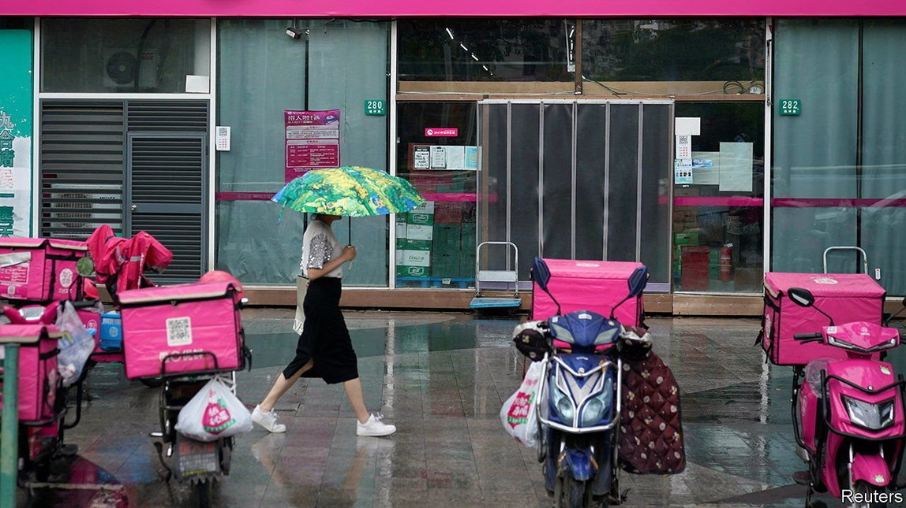
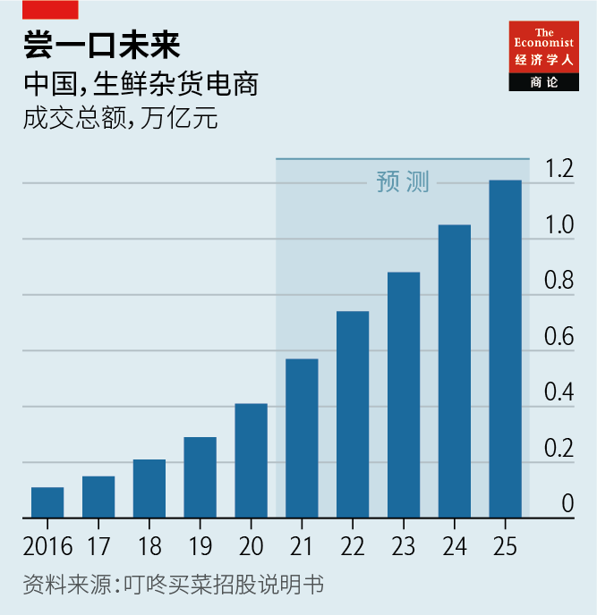
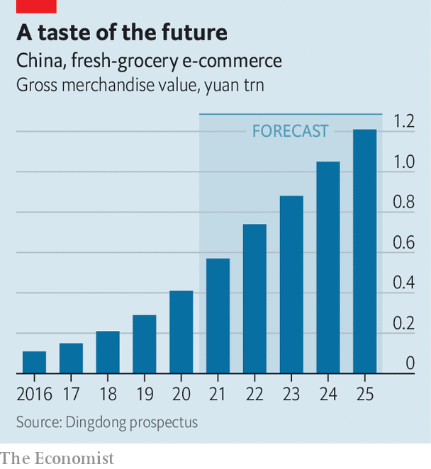

2021-07-12T17:14:06+00:00
新鲜热卖
投资者对中国的食品杂货电商胃口大开
会消化不良吗？
在疫情中，中国菜市场遭受的损失超过了大多数行业。在武汉的一处市场被指为新冠肺炎的传染源后，官方下令关闭其他菜市场。购物者不愿频繁光顾户外人来人往、售卖新鲜肉类和蔬菜的摊位。许多菜市场可能永远不会再重开，主要是因为它们正在被线上竞争对手迅速取代。在疫情爆发前的2019年，中国生鲜农产品的线上销售额为2930亿元，到2021年底，这一数字可能会上升到5700亿元（见图表）。这将使得食品杂货电商在生鲜食品支出中所占的份额达到11%，是疫情前的两倍。到2025年左右，这一比例可能会达到18%。
不久之前，食品杂货电商还只是阿里巴巴或京东等巨头在做其他电商业务时捎带的一个小附加服务，而不是一项独立的大业务。但现在不一样了。京东正忙着调整它那全国最先进的物流网络来更好地处理生鲜产品。去年，阿里巴巴以36亿美元收购了一家食品杂货连锁店，并一直在打造一个超市网络，可以用来将食品杂货送到网上购物者手中。另一家大型电商拼多多在2020年融资60亿美元来提升其食品杂货业务。该公司战略副总裁九鼎表示，它把产品送到附近的店铺，买家可以在那里提货，解决了最后一公里配送成本高昂的问题。
与此同时，挑战者也在抢占市场份额。每日优鲜称它掌握了28%的中国食杂电商配送，依靠的是分散的迷你仓库——小型的社区冷藏仓储中心，这被认为是该公司的一项创新。该公司称，通过让产品离客户更近，今年前三个月它在16个城市的平均履单时间为39分钟。叮咚买菜占国内食杂电商市场10%的份额，在长三角地区占据主导地位，它也建立了一系列类似的仓储单位。物美科技在中国北方的市场份额约为17%，它依靠的是老板张文中的零售技能。张文中在1994年创立了中国市场自己的沃尔玛——物美超市。和阿里巴巴一样，它可以把自己的几百家门店用作仓库。
中国的农业部门分散，现代化程度相对不足，农村地区交通落后，城市以外冷链参差不齐，这些因素都增加了一个本已利润微薄的行业的成本。每日优鲜、叮咚买菜和几十家规模更小些的竞争对手都在烧钱争夺市场份额，希望增加数百万新客户。2019年和2020年期间，单是这两家公司就合计净亏损97亿元。物美科技是盈利的，但在很大程度上要归功于它的传统零售业务。
所有这些都让研究公司Smartkarma的阿伦·乔治（Arun George）担心中国共享单车的兴衰史将重演——如今城市各处散落着破旧的自行车，而投资者的钱袋空空。进一步增加了不确定性的是，中国当局正在加强看管占主导地位的科技公司，以及关注工作过劳的外卖员的困境。一位政府官员最近“卧底”打工，揭示了外卖员每日辛苦劳作12个小时却收入微薄的现状。今年1月，有位绝望的外卖员因为被拖欠工资而自焚。
不过，像乔治这样的悲观主义者是少数。农村基础设施正在改善。而且尽管做了卧底调查，政府可能宁可社会上有上千万辛苦劳作的送货员，也不要有上千万焦躁不安的失业者。食品杂货电商也有财力雄厚的投资人。中国市值最高的互联网公司腾讯就一并资助了物美科技和每日优鲜。叮咚买菜已经从出手大方的日本科技集团软银那里获得了一笔投资。投资风格彪悍的美国对冲基金老虎环球（Tiger Global）押注有前景的市场而非某家创业公司，它同样对这个市场看涨。它持有每日优鲜12%的股份，还有更少一些的叮咚买菜的股份。
而更广泛人群对中国食品杂货电商的胃口将经受考验。6月，每日优鲜和叮咚买菜都公布了在纽约上市的计划。物美科技正考虑在香港上市。这三家公司可能总共融资20亿美元。这足以让它们在一段时间内保持新鲜，但也会让投资者消化不良。
2021-07-12T17:14:06+00:00
Selling like hot cakes
Investors cannot get enough of Chinese e-grocers
Will this cause indigestion?
WET MARKETS in China have suffered more than most businesses in the pandemic. After one in Wuhan was blamed as the source of covid-19, officials ordered others to shut. Shoppers have been reluctant to frequent bustling outdoor stalls selling fresh meat and vegetables. Many may never reopen—not least because they are being rapidly displaced by online rivals. The value of online sales of fresh produce in China, which amounted to 293bn yuan ($45bn) in 2019, before the pandemic, may rise to 570bn yuan by the end of 2021 (see chart). That would put e-grocers’ share of fresh-food spending at 11%, double what it was before covid-19. It could hit 18% by the middle of the decade.
Until recently e-grocery was a small add-on to other e-commerce offerings of giants such as Alibaba or JD.com, rather than a big business in its own right. No longer. JD.com is busily adapting its logistics network, China’s most sophisticated, to handle fresh produce. Last year Alibaba spent $3.6bn on a grocery-store chain, and it has been building a network of supermarkets that can be used to get groceries to online shoppers. Pinduoduo, another big e-merchant, raised $6bn in 2020 to boost its grocery operations. It ferries produce to neighbourhood shops where buyers can pick up orders, overcoming the problem of the costly last mile, says David Liu, the company’s vice-president of strategy.
At the same time, challengers are taking a bite out of the market. Missfresh claims to control 28% of Chinese e-grocery deliveries that rely of distributed mini-warehouses: small, refrigerated neighbourhood storage centres, which the company is credited with inventing. By keeping the products closer to customers, Missfresh says it was able to fulfil orders in an average of 39 minutes in 16 cities during the first three months of the year. Dingdong Maicai, which has 10% of the domestic market and is the dominant e-grocer in the greater Shanghai region, has built a similar set of units. WM Tech, with a market share of around 17% in northern China, can count on the retail chops of its boss, Zhang Wenzhong, who founded Wumart as China’s answer to Walmart in 1994. Like Alibaba, it can use its hundreds of retail outlets as warehouses.
China’s fragmented agricultural sector, a relative absence of industrial farming, poor transport links to rural areas and patchy cold-supply chains beyond cities all add to the costs in what is already a business with wafer-thin margins. Missfresh, Dingdong and dozens of smaller rivals are burning cash as they scramble for market share in the hope of adding millions of new customers. The pair alone notched up a combined 9.7bn yuan in net losses during 2019 and 2020. WM Tech makes a profit, but that is thanks in large part to its conventional retail operation.
All this leads Arun George of Smartkarma, a research firm, to fear a repeat of China’s e-bike boom and bust, which left cities littered with clapped-out bicycles and investors with holes in their pockets. Adding to the uncertainty, Chinese authorities are paying closer attention to dominant technology firms, as well as to the plight of overworked scooter-borne delivery drivers. A government official recently went undercover to reveal their arduous 12-hour days for little pay. In January one desperate delivery worker set himself on fire over unpaid wages.
Pessimists like Mr George are, though, in the minority. Rural infrastructure is improving and the government may, despite the sting operation, prefer millions of drivers with tough jobs to millions of restive jobless. And the e-grocers have deep-pocketed patrons. Tencent, China’s most valuable internet company, has backed both WM Tech and Missfresh. Dingdong has secured an investment from SoftBank, a free-spending Japanese technology group. Tiger Global, an aggressive American hedge fund, which bets on promising markets rather than single startups, is also bullish. It holds a 12% stake in Missfresh and a smaller one in Dingdong.
As for broader appetite for Chinese e-grocers, it is about to be tested. In June both Missfresh and Dingdong unveiled plans for initial public offerings in New York. WM Tech is eyeing a flotation in Hong Kong. The three companies could raise a total of $2bn. That would be enough to keep them fresh for a while—but also to leave investors with indigestion. ■
2021-07-12T17:14:06+00:00
新鮮熱賣
投資者對中國的食品雜貨電商胃口大開
會消化不良嗎？
在疫情中，中國菜市場遭受的損失超過了大多數行業。在武漢的一處市場被指為新冠肺炎的傳染源後，官方下令關閉其他菜市場。購物者不願頻繁光顧戶外人來人往、售賣新鮮肉類和蔬菜的攤位。許多菜市場可能永遠不會再重開，主要是因為它們正在被線上競爭對手迅速取代。在疫情爆發前的2019年，中國生鮮農產品的線上銷售額為2930億元，到2021年底，這一數字可能會上升到5700億元（見圖表）。這將使得食品雜貨電商在生鮮食品支出中所佔的份額達到11%，是疫情前的兩倍。到2025年左右，這一比例可能會達到18%。
不久之前，食品雜貨電商還只是阿里巴巴或京東等巨頭在做其他電商業務時捎帶的一個小附加服務，而不是一項獨立的大業務。但現在不一樣了。京東正忙着調整它那全國最先進的物流網絡來更好地處理生鮮產品。去年，阿里巴巴以36億美元收購了一家食品雜貨連鎖店，並一直在打造一個超市網絡，可以用來將食品雜貨送到網上購物者手中。另一家大型電商拼多多在2020年融資60億美元來提升其食品雜貨業務。該公司戰略副總裁九鼎表示，它把產品送到附近的店鋪，買家可以在那裡提貨，解決了最後一公里配送成本高昂的問題。
與此同時，挑戰者也在搶佔市場份額。每日優鮮稱它掌握了28%的中國食雜電商配送，依靠的是分散的迷你倉庫——小型的社區冷藏倉儲中心，這被認為是該公司的一項創新。該公司稱，通過讓產品離客戶更近，今年前三個月它在16個城市的平均履單時間為39分鐘。叮咚買菜佔國內食雜電商市場10%的份額，在長三角地區佔據主導地位，它也建立了一系列類似的倉儲單位。物美科技在中國北方的市場份額約為17%，它依靠的是老闆張文中的零售技能。張文中在1994年創立了中國市場自己的沃爾瑪——物美超市。和阿里巴巴一樣，它可以把自己的幾百家門店用作倉庫。
中國的農業部門分散，現代化程度相對不足，農村地區交通落後，城市以外冷鏈參差不齊，這些因素都增加了一個本已利潤微薄的行業的成本。每日優鮮、叮咚買菜和幾十家規模更小些的競爭對手都在燒錢爭奪市場份額，希望增加數百萬新客戶。2019年和2020年期間，單是這兩家公司就合計凈虧損97億元。物美科技是盈利的，但在很大程度上要歸功於它的傳統零售業務。
所有這些都讓研究公司Smartkarma的阿倫·喬治（Arun George）擔心中國共享單車的興衰史將重演——如今城市各處散落着破舊的自行車，而投資者的錢袋空空。進一步增加了不確定性的是，中國當局正在加強看管佔主導地位的科技公司，以及關注工作過勞的外賣員的困境。一位政府官員最近“卧底”打工，揭示了外賣員每日辛苦勞作12個小時卻收入微薄的現狀。今年1月，有位絕望的外賣員因為被拖欠工資而自焚。
不過，像喬治這樣的悲觀主義者是少數。農村基礎設施正在改善。而且儘管做了卧底調查，政府可能寧可社會上有上千萬辛苦勞作的送貨員，也不要有上千萬焦躁不安的失業者。食品雜貨電商也有財力雄厚的投資人。中國市值最高的互聯網公司騰訊就一併資助了物美科技和每日優鮮。叮咚買菜已經從出手大方的日本科技集團軟銀那裡獲得了一筆投資。投資風格彪悍的美國對沖基金老虎環球（Tiger Global）押注有前景的市場而非某家創業公司，它同樣對這個市場看漲。它持有每日優鮮12%的股份，還有更少一些的叮咚買菜的股份。
而更廣泛人群對中國食品雜貨電商的胃口將經受考驗。6月，每日優鮮和叮咚買菜都公布了在紐約上市的計劃。物美科技正考慮在香港上市。這三家公司可能總共融資20億美元。這足以讓它們在一段時間內保持新鮮，但也會讓投資者消化不良。